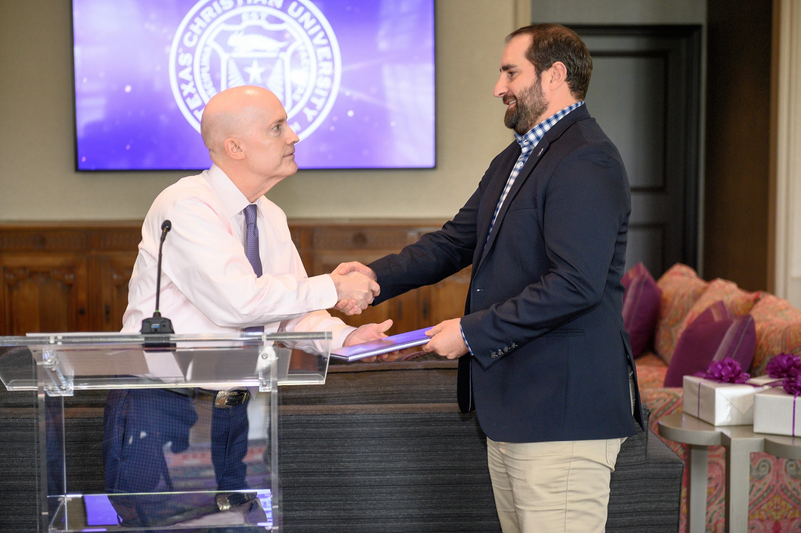
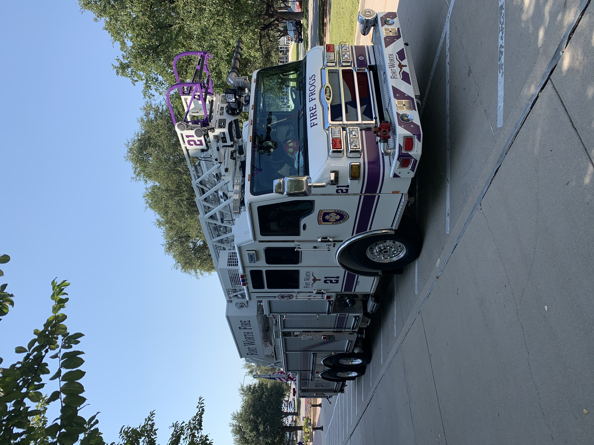

About Me
Background
Hello and welcome! As a professional emergency manager, I'm driven by a commitment to safety and preparedness, always striving to make a difference. My journey continues with a Master of Liberal Arts, broadening my understanding of the world around us. Outside of my work and studies, you'll find me embracing my passions for travel, continuous learning, and creating lasting memories with my family. My current studies focus on web authoring, where I hope to build safer communities and share my passions to a digital audience.
Education
My academic foundation is built upon practical experience, beginning with my time as a firefighter and EMT. This firsthand exposure to emergency situations led me to earn a Bachelor's degree in Emergency Management from the University of North Texas (UNT), where I developed my skills in preparedness, response, and recovery. Currently, I'm expanding my intellectual horizons through Texas Christian University's (TCU) Master of Liberal Arts program. My studies in this program have largely centered on global history and society, providing me with a broader perspective on the intricate forces that shape our world and influence human life.
Interests & Goals
My interest in web design is a direct extension of my expertise in emergency management. I'm driven to create engaging, accessible online content that empowers communities to initiate proactive preparedness and equips local populations with the knowledge to take life-saving response actions when it matters most.
Skills & Learning
- HTML & CSS (learning)
- Web Design Principles
- Crisis Leadership
- Business Continuity
- Certified Emergency Manager - International Association of Emergency Managers
- Level A2 French Speaking